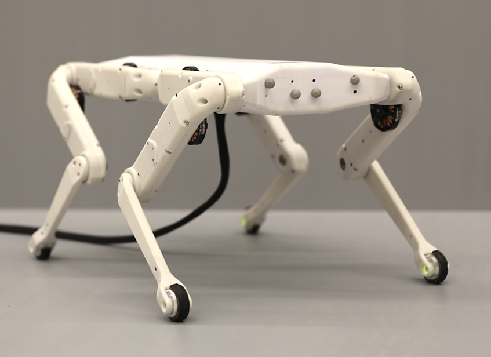
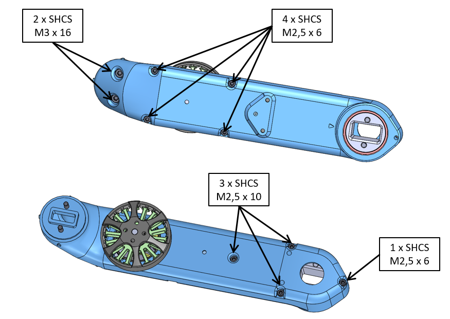
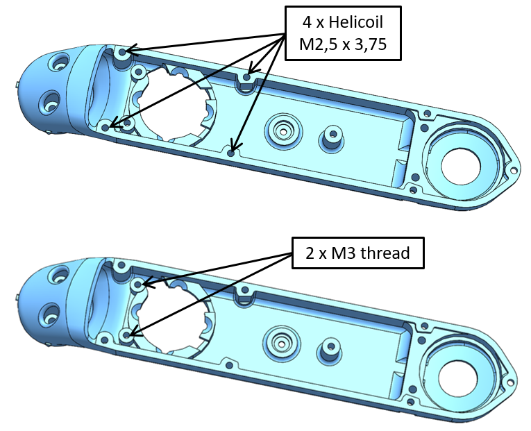
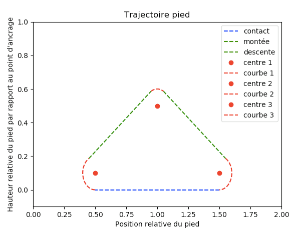
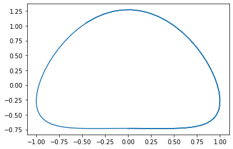
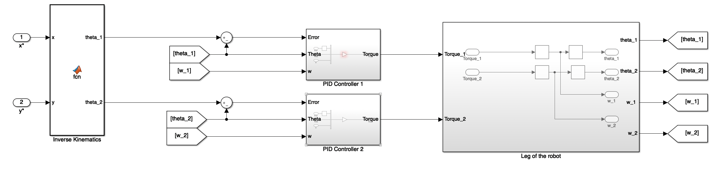

Master's Project
Assembly and Implentation of a walk algorithm on a 8-DOF quadruped robot

Introduction
This project is a team Master's project for the ISAE-Supaero MSc in Aerospace & Aeronautics Engineering year. It is a demanding project since we have to deal with a client, the LAAS-CNRS, as we would do in a real company. The goal of this project is to assemble and implement a walk on a 8-DOF quadruped robot for the LAAS-CNRS lab based on what has been done by the Max Planck Institute in Germany.Assembling the robot
The first activity we had to carry out for our client, the LAAS-CNRS, was to assemble the robot by following a detailed assembly protocol. The assembly of the robot is quite demanding because our client wanted to keep joint mechanical friction as low as possible in order to maximize the reactivity of the robot. Since the assembly of the robot is quite demanding and because we have limited time dedicated to this project, the final assembly is scheduled for January 2020. Here is an excerpt of the assembly procedure needed corresponding to the preparation of the shells of the legs:  Designing a trajectory and implementing a controller
Inverse kinematics
The first step to designing a trajectory for the leg of the robot was to compute what we call the inverse kinematics. Indeed, we wanted to control the position of the tip of the leg in the x-z plan instead of the angles. Therefore, we had to determine the angles corresponding to a position of the tip of a leg: this is what we called the inverse kinematics.Designing a trajectory
We wanted to test several methods to design a trajectory. The first approach was the geometric approach: we just design a trajectory in the x-y plan as following:  This approach is quite simple but requires to determine timely commands x(t) and y(t) from the x-y trajectory such that x(t), y(t), vx(t) and vy(t) are continuous functions. The second approach we tested was the Fourrier Series appoach. In this approach, we tried to generate the x(t) and y(t) signals such that the x-y approximate the previous x-y trajectory. We have noticed that this method is a powerful method because it is quite easy to implement and it produces satisfying results quickly. For example, here is the first trajectory we generated using Fourrier Series:  This x-y trajectory was generate only a few lines of code in Python:
import numpy as np
import matplotlib.pyplot as plt
t = np.arange(start=0,stop=10,step=0.1)
x=np.sin(t)
y=np.sin(t-np.pi/2)-0.27*np.sin(2*t-np.pi/2)
Implementing the controller to generate the walk
Several files have been use to generate the controller and the trajectory. But the main idea is that the trajectory is generated by the x(t) and y(t) functions that we have determined thanks to the previous approach. After that, a PID controller that we first generated and tested on Matlab/Simulink is implemented to generate the torques required to reach the desired x and y positions. Here is a simplified model we used: Implementation on the robot and testing
The LAAS-CNRS provided us with a full simulation environment so we could test and optimize different walk algorithms. We have tested a few promising gaits by simulation. Here is the first walk we implemented in the simulation in October 2019: